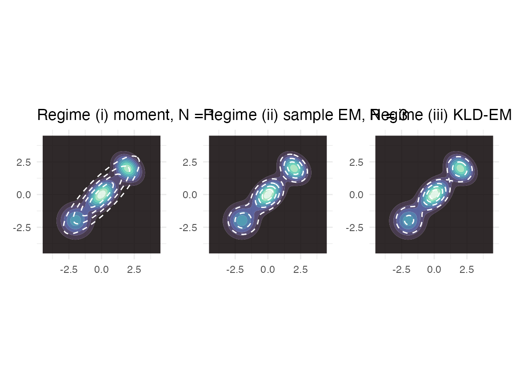
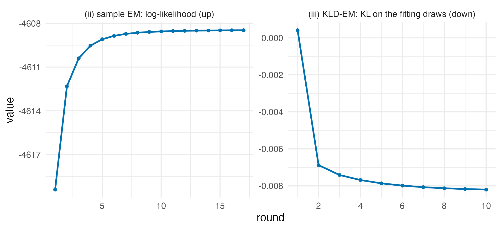

has_ggplot2 <- requireNamespace("ggplot2", quietly = TRUE)The problem
proxymix fits a mixture of a few normal distributions, called a Gaussian mixture, as a stand-in, or proxy, for a distribution you want to work with. The distribution being approximated is called the target. The package has three ways of fitting the proxy, described by van der Hoek and Elliott (2024). They differ in what they need from the target: a sample drawn from it, or a formula for its density.
Often only one kind of input is available, and the choice is made for you. Sometimes you have both, and two of the methods will run on the same target and return similar-looking mixtures. This vignette runs all three methods on targets that have both a formula and a sample, and shows what each one uses and what it costs. It then checks the sample-based method against three established mixture packages.
Package capabilities
-
fit_moment_match()fits a single normal distribution with the same mean and covariance as the target’s sample. This is method (i). -
fit_em_samples()fits a mixture of several normal distributions to a sample. This is method (ii). -
fit_kld_em()fits a mixture to the density formula alone, without a sample. This is method (iii). -
fit_proxymix()runs any of the three. Itsregimeargument takes the values"moment","sample"and"kld", or"auto"to choose from what the target carries. -
bic_aic()andselect_N()choose the number of components. None of the three fitting methods chooses it for you. -
mixture_target()andbanana_target()are ready-made targets in two variables. Each can carry a sample as well as its formula.
Addressing the problem
A target with both a formula and a sample
The ready-made mixture target is itself a mixture of three normal distributions. Its density formula is known exactly, and exact samples are easy to draw. All three methods can therefore be run on the same target.
tgt <- mixture_target(with_samples = TRUE, n = 1500L, seed = 1L)
tgt
#> <gmm_target>: "three_mixture" in p = 2 dimensions
#> log_density : supplied
#> samples : 1500 x 2 matrix
#> normalised : TRUE
#> log Z(f) : 0Method (i): one normal distribution with the sample’s mean and spread
With one component (N = 1), the closest normal
distribution to the target has the same mean and covariance as the
target. “Closest” here is measured by the Kullback-Leibler (KL)
divergence, which is zero when two distributions match and grows as they
differ. Method (i) computes the mean and covariance of the sample in one
step, with no iteration.
m_fit <- fit_proxymix(tgt, N = 1L, regime = "moment")
m_fit
#> <gmm_fit>: regime = "moment", K = 1, p = 2
#> target : three_mixture
#> iterations : 0
#> converged : TRUE
#> [1] w = 1.0000, |mu| = 0.0328, tr(Sigma) = 5.6029The fitted mean and covariance equal those of the sample. The only
difference is a small constant, set by ridge_eps, that is
added to the diagonal of the covariance matrix, which stops the fit
failing when the matrix is close to singular. With
ridge_eps = 0 the difference disappears.
m_fit_bare <- fit_proxymix(tgt, N = 1L, regime = "moment", ridge_eps = 0)
moment_gap <- c(
mean = max(abs(m_fit@means[[1L]] - colMeans(tgt@samples))),
covariance = max(abs(m_fit@covariances[[1L]] - cov(tgt@samples))),
covariance_no_ridge = max(abs(m_fit_bare@covariances[[1L]] -
cov(tgt@samples)))
)
signif(moment_gap, 3L)
#> mean covariance covariance_no_ridge
#> 0e+00 1e-06 0e+00One normal distribution cannot describe a target with three peaks. It is, however, the closest single normal distribution to the target.
Method (ii): several normal distributions fitted to the sample
Method (ii) is the expectation-maximisation (EM) algorithm, the
standard way to fit a mixture to a sample. Each round has two steps. The
first step works out, for every point, the probability that it came from
each component. The second step refits each component’s weight, mean and
covariance to the points, counting each point in proportion to those
probabilities. The same ridge_eps stops each covariance
from becoming singular. The rounds stop when the log-likelihood of the
sample, a measure of how well the mixture fits it, changes by less than
the tolerance tol. n_starts = 4L runs the
algorithm from four starting points and keeps the best fit.
s_fit <- fit_proxymix(tgt, N = 3L, regime = "sample",
max_iter = 200L, n_starts = 4L, seed = 1L)
s_fit
#> <gmm_fit>: regime = "sample", K = 3, p = 2
#> target : three_mixture
#> iterations : 17
#> converged : TRUE
#> [1] w = 0.4061, |mu| = 0.0336, tr(Sigma) = 0.9343
#> [2] w = 0.3032, |mu| = 2.7588, tr(Sigma) = 1.2155
#> [3] w = 0.2907, |mu| = 2.8186, tr(Sigma) = 0.8084Method (iii): several normal distributions fitted to the formula
Method (iii) needs only the density formula. It is the method to use
when no sample exists, as with a Bayesian posterior that comes as a
formula with no direct way to draw from it. It draws trial points once
from a broad distribution that is easy to sample, called the proposal.
Each trial point is weighted by how much more likely it is under the
target than under the proposal. The mixture is then refitted to the
weighted points in rounds, which lower the KL divergence from the
target. The proposal here is a Student-t distribution, a relative of the
normal with heavier tails. Its degrees of freedom, df = 5,
set how heavy the tails are: the fewer, the heavier.
k_fit <- fit_proxymix(tgt, N = 3L, regime = "kld",
proposal = proposal_mvt(n_dim = 2L,
mean = c(0, 0),
sigma = 6 * diag(2),
df = 5),
is_size = 3000L,
max_iter = 60L,
seed = 1L)
k_fit
#> <gmm_fit>: regime = "kld", K = 3, p = 2
#> target : three_mixture
#> iterations : 10
#> converged : TRUE
#> [1] w = 0.4164, |mu| = 0.0300, tr(Sigma) = 0.8377
#> [2] w = 0.3069, |mu| = 2.7545, tr(Sigma) = 1.2249
#> [3] w = 0.2767, |mu| = 2.7562, tr(Sigma) = 0.8740The three fits side by side
grid_x <- seq(-4.5, 4.5, length.out = 100L)
grid_base <- expand.grid(x1 = grid_x, x2 = grid_x)
grid_mat <- as.matrix(grid_base)
target_d <- exp(tgt@log_density(grid_mat))
panel_of <- function(fit, label) {
data.frame(
x1 = grid_base$x1, x2 = grid_base$x2,
target = target_d,
proxy = dgmm(grid_mat, fit),
regime = label,
stringsAsFactors = FALSE
)
}
overlay_df <- rbind(
panel_of(m_fit, "(i) moment, N = 1"),
panel_of(s_fit, "(ii) sample EM, N = 3"),
panel_of(k_fit, "(iii) KLD-EM, N = 3")
)
overlay_df$regime <- factor(overlay_df$regime,
levels = unique(overlay_df$regime))
ggplot2::ggplot(overlay_df, ggplot2::aes(x1, x2)) +
ggplot2::geom_contour_filled(ggplot2::aes(z = target), bins = 10L,
alpha = 0.85) +
ggplot2::geom_contour(ggplot2::aes(z = proxy), colour = "white",
linetype = "dashed", linewidth = 0.4, bins = 5L) +
ggplot2::scale_fill_viridis_d(option = "mako", guide = "none") +
ggplot2::facet_wrap(~ regime) +
ggplot2::coord_equal() +
ggplot2::labs(x = expression(x[1]), y = expression(x[2])) +
ggplot2::theme_minimal(base_size = 11)
The three-peak target (filled contours, the same in all three panels) with each method’s proxy overlaid as dashed contours. Method (i) spreads one normal distribution across all three peaks. Methods (ii) and (iii) each place one component on each peak and look alike, although (ii) used only the sample and (iii) only the formula.
What each method improves in each round
Methods (ii) and (iii) aim at different quantities. Method (ii) raises the log-likelihood of the sample. Method (iii) lowers an estimate of the KL divergence from the target, computed on the weighted trial points.
trace_df <- rbind(
data.frame(
iteration = seq_along(s_fit@diagnostics$loglik_trace),
value = s_fit@diagnostics$loglik_trace,
panel = "(ii) sample EM: log-likelihood (up)",
stringsAsFactors = FALSE
),
data.frame(
iteration = seq_along(kld_trace(k_fit)),
value = kld_trace(k_fit),
panel = "(iii) KLD-EM: KL on the fitting draws (down)",
stringsAsFactors = FALSE
)
)
ggplot2::ggplot(trace_df, ggplot2::aes(iteration, value)) +
ggplot2::geom_line(colour = "#0072B2", linewidth = 0.8) +
ggplot2::geom_point(colour = "#0072B2", size = 1.1) +
ggplot2::facet_wrap(~ panel, scales = "free") +
ggplot2::scale_x_continuous(breaks = function(lim) unique(floor(pretty(lim)))) +
ggplot2::labs(x = "round", y = "value") +
ggplot2::theme_minimal(base_size = 11)
The value each method improves, round by round. Method (ii) raises the log-likelihood of the sample. Method (iii) lowers an estimate of the KL divergence, scored on the same trial points the fit was tuned to. That makes the estimate read low, and it can fall below zero, although a true KL divergence cannot.
One normal distribution fitted two ways, against the exact answer
With one component, methods (i) and (iii) aim at the same answer: the mean and covariance of the target. Method (i) reads them from the sample. Method (iii) reads only the formula. The banana target makes it possible to check both against the exact answer. It is built from two independent standard normal variables and as and . Its mean is therefore . The variance of is 1, the variance of is , and the trace of the covariance, the sum of the two variances, is exactly .
banana <- banana_target(with_samples = TRUE, n = 2000L, seed = 1L)
m_b <- fit_proxymix(banana, N = 1L, regime = "moment")
k_b <- fit_proxymix(banana, N = 1L, regime = "kld",
proposal = proposal_mvt(n_dim = 2L,
sigma = 4 * diag(2),
df = 5),
is_size = 3000L, max_iter = 50L, seed = 1L)
tr_of <- function(f) sum(diag(f@covariances[[1L]]))
sample_trace <- sum(diag(cov(banana@samples)))
exact_trace <- 1 + (1 + 2 * 0.5^2)| Source | Uses | Trace of covariance | Error |
|---|---|---|---|
| method (i), moment match | the sample | 2.678 | 0.178 |
| method (iii), KLD-EM | the formula | 2.448 | -0.052 |
| the attached sample | the sample | 2.678 | 0.178 |
| exact value | the construction of the target | 2.500 | 0.000 |
The sample and the trial points are each one random draw. Repeating both with fresh seeds shows how far each trace moves by chance.
sample_traces <- vapply(seq_len(500L), function(s) {
sum(diag(cov(banana_target(with_samples = TRUE, n = 2000L,
seed = s)@samples)))
}, numeric(1L))
kld_traces <- vapply(seq_len(100L), function(s) {
tr_of(fit_proxymix(banana, N = 1L, regime = "kld",
proposal = proposal_mvt(n_dim = 2L,
sigma = 4 * diag(2),
df = 5),
is_size = 3000L, max_iter = 50L, seed = s))
}, numeric(1L))
spread <- data.frame(
seeds = c(length(sample_traces), length(kld_traces)),
mean = c(mean(sample_traces), mean(kld_traces)),
sd = c(sd(sample_traces), sd(kld_traces)),
row.names = c("trace of a 2000-point sample", "method (iii) trace")
)
round(spread, 3L)
#> seeds mean sd
#> trace of a 2000-point sample 500 2.496 0.085
#> method (iii) trace 100 2.488 0.073Comparison with mclust, mixtools and flexmix
The established packages mclust, mixtools
and flexmix fit mixtures to samples, as method (ii) does.
They do not fit a mixture to a formula alone, so they can check method
(ii) but not method (iii). Two checks were run, and every package was
given the number of components. The first uses the 272 eruptions of the
Old Faithful geyser in R’s faithful data (Azzalini and
Bowman, 1990): the length of each eruption and the waiting time to the
next. Each package fitted a two-component mixture to a random half of
the eruptions. Each fit was then scored by its held-out log-likelihood,
the average log density it gives to the other half. Higher is better.
The second check is a simulation of 300 datasets of 200 points and 300
datasets of 1,000 points, drawn from the three-component mixture used
above. Each fit was scored by its KL divergence from the true mixture,
computed on a fine grid. A fit whose divergence exceeded 0.1 was counted
as a misfit. mclust (Scrucca et al., 2016) chose among its
covariance shapes by the Bayesian information criterion (BIC), a score
that balances fit against the number of parameters. flexmix
(Leisch, 2004; Grün and Leisch, 2008) kept the best of five random
starts, the number proxymix uses by default for method (ii) as well. One
mixtools (Benaglia et al., 2009) fit to 1,000 points took
41 s, so mixtools was left out of the simulation.
| Package | Old Faithful: held-out log-likelihood | Mean KL, 200 points | Mean KL, 1,000 points | Misfits, 200 points | Misfits, 1,000 points |
|---|---|---|---|---|---|
| proxymix, method (ii) | -4.311 | 0.0527 | 0.0092 | 15 | 0 |
| mclust | -4.318 | 0.0583 | 0.0117 | 7 | 0 |
| mixtools | -4.312 | not run | not run | not run | not run |
| flexmix | -4.308 | 0.0955 | 0.0647 | 108 | 80 |
On this one split of Old Faithful, the four fits are within 0.011 of
each other in held-out log-likelihood. In the simulation, proxymix had
the lowest mean KL divergence of the three packages at both sample
sizes. Its paired difference from mclust over the same
datasets was -0.0056 at 200 points and -0.0026 at 1,000 points, with
standard errors of 0.0011 and 0.0003. At 200 points, however,
mclust had fewer misfits than proxymix, 7 against 15. At
1,000 points neither had any. flexmix produced misfits in
36 per cent of the 200-point datasets and 27 per cent of the 1,000-point
ones.
At 200 points, proxymix took 0.039 s per fit on average, 2.5 times as
long as mclust (0.016 s), and flexmix took
0.65 s. At 1,000 points, proxymix took 0.09 s, mclust 0.23
s and flexmix 0.97 s.
The code below runs the Old Faithful check with all four packages. It
converts each package’s fit to a proxymix mixture, so that
dgmm() scores every fit in the same way. It needs
mclust, mixtools and flexmix, all
on CRAN, and it is not run when this vignette is built.
library(proxymix)
library(mclust)
library(mixtools)
library(flexmix)
# split the Old Faithful eruptions into a training half and a held-out half
faithful_mat <- as.matrix(datasets::faithful)
set.seed(20260925)
i_train <- sort(sample.int(nrow(faithful_mat), nrow(faithful_mat) / 2L))
train <- faithful_mat[i_train, ]
test <- faithful_mat[-i_train, ]
train_df <- data.frame(eruptions = train[, 1L], waiting = train[, 2L])
# convert each package's fit to a proxymix mixture, so dgmm() scores all four
as_gmm_mclust <- function(fit) {
gmm(
weights = fit$parameters$pro,
means = lapply(seq_len(fit$G), function(k) fit$parameters$mean[, k]),
covariances = lapply(seq_len(fit$G), function(k) {
fit$parameters$variance$sigma[, , k]
})
)
}
as_gmm_mixtools <- function(fit) {
gmm(weights = fit$lambda, means = fit$mu, covariances = fit$sigma)
}
as_gmm_flexmix <- function(fit) {
comps <- lapply(fit@components, function(cc) cc[[1L]]@parameters)
gmm(
weights = prior(fit),
means = lapply(comps, function(p) unname(p$center)),
covariances = lapply(comps, function(p) unname(p$cov))
)
}
# two-component fits to the training half
set.seed(1L)
fits <- list(
proxymix = fit_proxymix(gmm_target_from_samples(train), N = 2L,
regime = "sample"),
mclust = as_gmm_mclust(Mclust(train, G = 2L, verbose = FALSE)),
mixtools = as_gmm_mixtools(mvnormalmixEM(train, k = 2L, verb = FALSE)),
flexmix = as_gmm_flexmix(stepFlexmix(
cbind(eruptions, waiting) ~ 1, data = train_df, k = 2L, nrep = 5L,
model = FLXMCmvnorm(diagonal = FALSE), verbose = FALSE
))
)
# mean log-likelihood of the held-out eruptions under each fit
vapply(fits, function(g) mean(dgmm(test, g, log = TRUE)), numeric(1L))The extended version of this article gives the full simulation code and a measure of how well each package’s grouping of the points matches the true components. It also compares method (iii) on the Old Faithful data with drawing a sample by Markov chain Monte Carlo, a standard way to sample from a formula, and fitting a mixture to that sample.
Interpretation
Method (i) copies the moments of the sample rather than estimating
them by iteration. Its fitted mean equals the sample mean exactly. Its
fitted covariance differs from the sample covariance by
,
which is the constant that ridge_eps adds to the diagonal.
Without that constant, the fitted covariance equals the sample
covariance exactly.
Methods (ii) and (iii) reach nearly the same mixture by different routes. Method (ii) took 17 rounds and method (iii) took 10. Their component weights agree to within 0.015. Both put one component on each peak, which is correct for a target that is itself a mixture of three normal distributions. The 3,000 weighted trial points of method (iii) were worth 758 equally weighted points, 25 per cent of the total. On 30,000 fresh trial points, the KL divergence of the method (iii) proxy from the target is 0.012, with a simulation standard error of 0.002.
On the banana target, the attached sample overstates the exact trace of 2.5 by 0.178, and method (i) copies that error. Method (iii) never sees the sample. Its trace is 0.052 below the exact value. In this one run, method (iii) is therefore closer. The repeated draws show that this is partly chance. The trace of a 2,000-point sample has a standard deviation of 0.085, so this sample’s error is 2.1 standard deviations. The method (iii) trace has a standard deviation of 0.073 over 100 seeds, which is similar. Its average is 0.012 below the exact value, which is less than two standard errors of that average.
Methods (i) and (ii) fit whatever sample was drawn, while method (iii) fits the formula itself. With a large sample the difference is negligible. In the simulation above, method (iii) was also given the true formula and 3,000 trial points. It does not use the sample. Its mean KL divergence was 0.0068 and 0.0070 in the two halves of the simulation, which differ only by chance. Method (ii) reached 0.0527 and 0.0092. When samples are plentiful, method (iii) costs more: it needs a proposal, it evaluated the formula 33,000 times for the three-peak fit, and its weights have to be checked before the fit is used.
Limitations
The number of components was set by hand in every fit, and the
three-peak target was chosen because the right number is known. On a
real target, bic_aic() and select_N() choose
it. Too few components show up as a KL divergence that more trial points
do not reduce.
The three-peak target is itself a mixture of three normal distributions, so methods (ii) and (iii) can both match it exactly. On a target of a different shape, the two methods aim at different quantities, and their fits differ.
The exact trace of the banana target is known only because the target is built from normal variables. A sum over a grid of 400 by 400 points on misses of the probability and gives 2.494, which is 0.006 below the exact value. The missing probability lies far out in the tail of , where it adds much to the variance. A grid sum is a useful check only in two or three variables, and only after you have checked how much probability the grid misses.
The comparison with other packages covers one real dataset and one simulated mixture in two variables, with the number of components given. It does not cover a target of a different shape, a chosen number of components or more variables.
Further reading
Fitting a proxy to a density you cannot sample introduces method (iii) and the fit certificate that checks it.
How well a mixture proxies four awkward shapes applies method (iii) to targets that are not Gaussian mixtures.
Reading the entropy of a fitted mixture covers choosing the number of components, including a method that finds the number rather than being given it.
One mixture, many methods shows what else a single fitted mixture can do.
Mapping the optima of an objective applies method (iii) to a function that is to be optimised, and returns a mixture with one component on each of its optima.
References
Azzalini, A. and Bowman, A. W. (1990). A look at some data on the Old Faithful geyser. Journal of the Royal Statistical Society, Series C (Applied Statistics) 39(3), 357–365. https://doi.org/10.2307/2347385.
Benaglia, T., Chauveau, D., Hunter, D. R. and Young, D. S. (2009). mixtools: An R package for analyzing finite mixture models. Journal of Statistical Software 32(6), 1–29. https://doi.org/10.18637/jss.v032.i06.
Grün, B. and Leisch, F. (2008). FlexMix version 2: Finite mixtures with concomitant variables and varying and constant parameters. Journal of Statistical Software 28(4), 1–35. https://doi.org/10.18637/jss.v028.i04.
Hoek, J. van der and Elliott, R. J. (2024). Mixtures of multivariate Gaussians. Stochastic Analysis and Applications. https://doi.org/10.1080/07362994.2024.2372605.
Leisch, F. (2004). FlexMix: A general framework for finite mixture models and latent class regression in R. Journal of Statistical Software 11(8), 1–18. https://doi.org/10.18637/jss.v011.i08.
Scrucca, L., Fop, M., Murphy, T. B. and Raftery, A. E. (2016). mclust 5: Clustering, classification and density estimation using Gaussian finite mixture models. The R Journal 8(1), 289–317. https://doi.org/10.32614/RJ-2016-021.
Reproduce
The target’s sample is drawn with seed = 1L, and each
fit that uses random numbers is given seed = 1L. The
repeated banana draws use seeds 1 to 500 for the samples and 1 to 100
for the trial points. The comparison is read from stored results. The
simulation ran under proxymix 0.16.0, mclust 6.1.3 and
flexmix 2.3-21, and took about 15 minutes on one core. The
Old Faithful fits ran under mixtools 2.0.0.1 and the same
versions of the other packages.
#> R version 4.6.1 (2026-06-24)
#> Platform: aarch64-apple-darwin23
#> Running under: macOS Tahoe 26.6.2
#>
#> Matrix products: default
#> BLAS: /Library/Frameworks/R.framework/Versions/4.6/Resources/lib/libRblas.0.dylib
#> LAPACK: /Library/Frameworks/R.framework/Versions/4.6/Resources/lib/libRlapack.dylib; LAPACK version 3.12.1
#>
#> locale:
#> [1] en_AU.UTF-8/en_AU.UTF-8/en_AU.UTF-8/C/en_AU.UTF-8/en_AU.UTF-8
#>
#> time zone: Australia/Adelaide
#> tzcode source: internal
#>
#> attached base packages:
#> [1] stats graphics grDevices utils datasets methods base
#>
#> other attached packages:
#> [1] proxymix_0.16.0
#>
#> loaded via a namespace (and not attached):
#> [1] mvnfast_0.2.8 gtable_0.3.6 jsonlite_2.0.0 dplyr_1.2.1
#> [5] compiler_4.6.1 Rcpp_1.1.2 tidyselect_1.2.1 dichromat_2.0-1
#> [9] jquerylib_0.1.4 systemfonts_1.3.2 scales_1.4.0 textshaping_1.0.5
#> [13] yaml_2.3.12 fastmap_1.2.0 ggplot2_4.0.3 R6_2.6.1
#> [17] labeling_0.4.3 generics_0.1.4 isoband_0.3.0 knitr_1.51
#> [21] htmlwidgets_1.6.4 tibble_3.3.1 desc_1.4.3 bslib_0.12.0
#> [25] pillar_1.11.1 RColorBrewer_1.1-3 rlang_1.3.0 cachem_1.1.0
#> [29] xfun_0.60 fs_2.1.0 sass_0.4.10 S7_0.2.2
#> [33] otel_0.2.0 viridisLite_0.4.3 cli_3.6.6 pkgdown_2.2.1
#> [37] withr_3.0.3 magrittr_2.0.5 digest_0.6.39 grid_4.6.1
#> [41] lifecycle_1.0.5 vctrs_0.7.3 evaluate_1.0.5 glue_1.8.1
#> [45] farver_2.1.2 ragg_1.5.2 rmarkdown_2.32 tools_4.6.1
#> [49] pkgconfig_2.0.3 htmltools_0.5.9